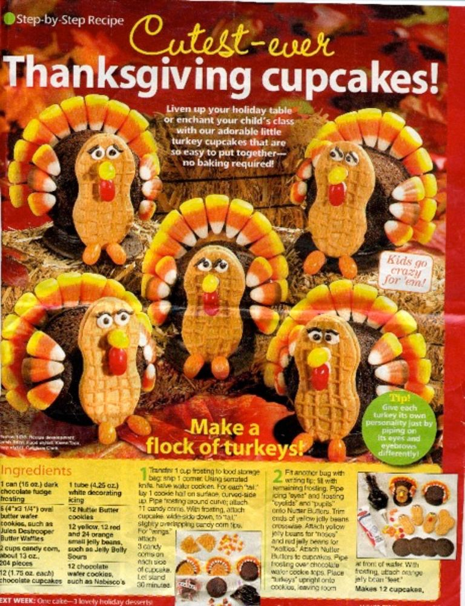

Cakes, Chocolate, Kids, Thanksgiving
Source: Mom
1 can dark chocolate fudge frosting
nutter butters
candy corn
12 chocolate cupcakes
1 tube white icing
6 4" x 3 1/4 " oval butter wafer cookes i.e. jules destrooper butter waffles
yellow, red, and orange jelly beans 24 each?
12 chocolate wafer cookies
Halve wafer cookies. For each "tail", lay 1 cookie half on surface, curved-side up. Pipe frosting around curve; attach 11 candy corns. With frosting, attach cupcake, wide-side down, to tail, slightly overlapping candy corn tips. For "wings", attach 3 candy corns on each side of cupcake. Let stand 30 minutes. With frosting "writing" tip Pipe icing "eyes" and frosting eyelids and pupils onto nutter butters. Trim ends of yellow jelly beans crosswise. Attach yellow jelly beans for "noses" and red jelly beans for "wattles". Attach Nutter butters to cupcakes. Pipe frosting over chocolate wafer cookie tops. Place turkeys upright onto cookies leaving room at front of wafer. With frosting attach orange jelly bean feet.